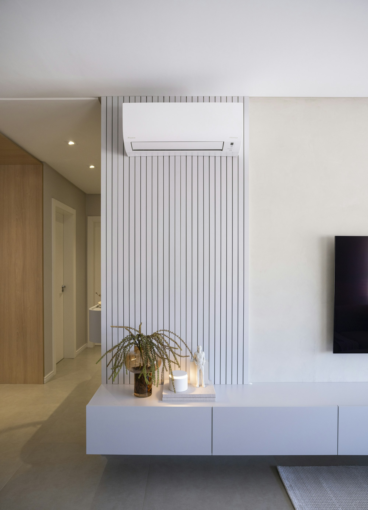

Systems for the home
Discuss room-by-room comfort, indoor unit position, and how you’d like the system to operate.
Northallerton · North Yorkshire
Residential and commercial air conditioning installation and servicing across Northallerton and North Yorkshire.
Available Monday to Friday, 8:00am–5:00pm

Interior photograph · Caroline Badran / UnsplashThoughtful climate control
Whether you’re planning a new installation or need help looking after an existing system, we’ll help you understand the options and the next steps. We work with domestic and commercial customers around Northallerton.
Explore our servicesManufacturer options
Accredited installers for Panasonic and Mitsubishi Heavy Industries
Air conditioning from a range of manufacturers, selected around your property and how you use it.
We install air conditioning from a range of manufacturers for suitable residential and small commercial projects. Our manufacturer installer accreditations are with Panasonic for RAC and PACi systems and Mitsubishi Heavy Industries. We’ll discuss suitable equipment, availability and your requirements before recommending an option.
Our Panasonic and Mitsubishi Heavy Industries accreditations apply to the relevant manufacturer systems and their requirements. We can also discuss equipment from other manufacturers.
Discuss room-by-room comfort, indoor unit position, and how you’d like the system to operate.
We’ll consider the premises, layout and use before proposing suitable equipment.
Equipment and configuration are confirmed for the property before a quotation is agreed.
Mitsubishi Heavy Industries products are covered by a five-year parts-only warranty when the manufacturer’s terms are met, including correct installation and commissioning and a comprehensive service management agreement for the full warranty period. Labour, travel and installation materials are excluded from the standard parts-only cover.
Read the MHI warranty terms ↗Panasonic · RAC & PACi
Panasonic
Eligible Panasonic air-conditioning systems installed by a Panasonic Accredited Installer can benefit from up to five years of manufacturer's warranty, subject to Panasonic's terms and conditions, product eligibility, installation requirements and warranty registration.
For eligible RAC and PAC equipment, five-year warranty cover can include parts and labour, subject to the applicable Panasonic warranty terms.
Eligibility and cover vary by product and are subject to Panasonic’s applicable terms.
How we can help
Room-by-room air conditioning for more comfortable living and working spaces.
Explore home services ↗02 / BUSINESSPractical climate control for workplaces, customer areas and other commercial spaces.
Explore business services ↗03 / SYSTEM CAREServicing, maintenance and fault finding for air conditioning systems.
See servicing options ↗Comfort in every season
Many split air conditioning systems can also heat. In heating mode, they work as air-to-air heat pumps: they move heat from the outside air into your room. Heating capability and performance vary by model and outdoor conditions.
Consider the spaces you use most and the comfort you want to achieve.
Plan indoor unit placement around the layout and appearance of your room.
Understand the proposed equipment and how to use its controls.
How it works
Share what you need and any details about the property or system.
Talk through equipment, practical details and the proposed scope.
Review the quotation and decide how you would like to proceed.
FGAS3023445

Qualification 2079-11
RAC and PACi systems
Accredited Installer
Start with a conversation
Share a few details and we’ll get back to you during weekday business hours.